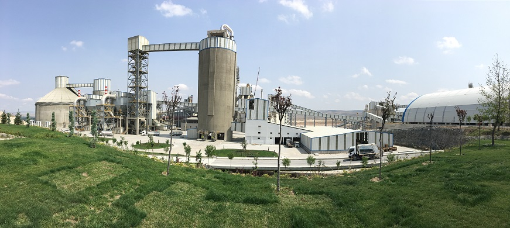

Afyon Çimento Fabrikası, 1957 yılında 85 bin ton kapasiteli yaş sistem fırınının devreye alınmasıyla üretime başlamıştır. 1965 yılında fırının yarı yaş sisteme dönüştürülmesi ile klinker üretim kapasitesi 160 bin tona yükselmiştir. Yine yarı yaş sistem olarak kurulan 2. fırın 1966 yılında devreye alınmış ve fabrikanın üretim kapasitesi 400 bin tona yükselmiştir.2012 yılında %51 hissesi Italcementi Grup şirketlerinden olan PARCIB S.A.S şirketinden Çimsa tarafından satın alınan Afyon Çimento Sanayi T. A. Ş., bu tarihten itibaren faaliyetlerini Çimsa’nın iştiraki olarak sürdürmektedir. 2014 yılında Afyon Çimento Fabrikası’nın 170 milyon ABD Doları bütçe ile modernizasyon yatırımı yapılarak, yeniden kurulmasına karar verilmiştir. Afyon Çimento Fabrikası’nın, modern teknolojilerle donatılmış yeni üretim tesisi, Afyon’un Halımoru Köyü’nde 1.500.000 ton/klinker kapasiteli olarak kurulmuştur.